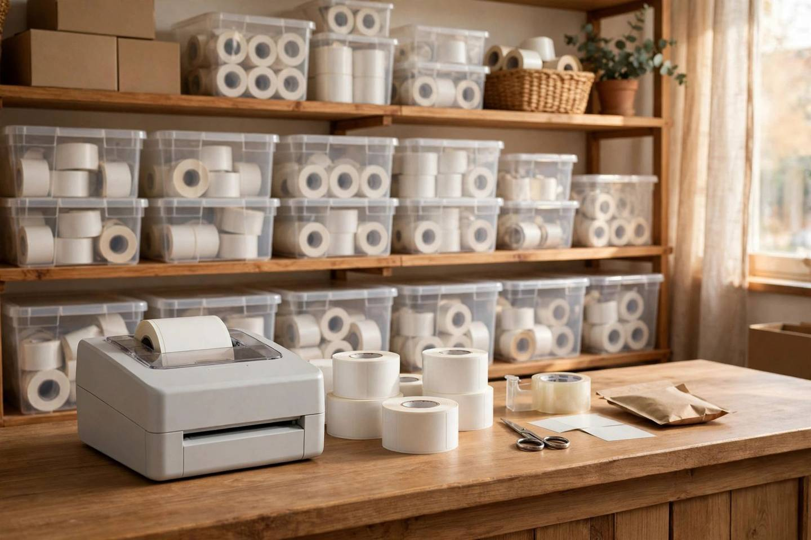

Label printer specs for retail tags: print method, width, and resolution, checked against the spec sheets

Which label printer does a small shop actually need? The buying guides answer with a list of models, usually the models the guide's publisher sells. The spec sheets answer in a different order, and it is the right one: how long the label must stay readable, how wide the widest label is, and how small the smallest barcode gets. A shop prints two different label jobs. Price tags and markdown labels live for weeks. Stockroom bin labels and shelf labels are expected to stay readable for years. Those two jobs point at different printers, and the difference is visible in the manufacturers' own documents before any model name comes up.
The spec sheet check: two desktop classes side by side
Two classes cover most small-shop counters. The narrow desktop class, represented here by DYMO's LabelWriter 550, is built for tags and small labels. The 4-inch desktop class, represented by Zebra's ZD421, is built to cover tags, shelf labels, and shipping labels from one machine. Every figure below comes from the manufacturer's own specification documents, DYMO's user guide and datasheet for the 550, Zebra's technical specifications for the ZD421.
| Spec | DYMO LabelWriter 550 | Zebra ZD421 |
|---|---|---|
| Print method | Direct thermal only | Direct thermal and thermal transfer models, plus a ribbon cartridge model |
| Resolution | 300 dpi | 203 dpi standard; 300 dpi optional |
| Maximum print width | 2.25 in (56 mm) | 4.09 in (104 mm) at 203 dpi; 4.27 in (108 mm) at 300 dpi |
| Top print speed | 62 labels per minute, measured on a 4-line address label | 6 in per second at 203 dpi; 4 in per second at 300 dpi |
| Label supply | Authentic DYMO LW labels only; other labels are not recognized | Open media system; Zebra notes results may vary with non-Zebra supplies and recommends qualifying the application with testing |
| Software and languages | DYMO Connect for Desktop; Windows 8 or later, Mac OS X v10.14 or later | ZPL and EPL printer languages, with emulation of other brands' languages; USB standard, Ethernet and wireless as field-upgradeable options |
Three cells decide most purchases. The width cell: a shelf label or bin label wider than 2.25 inches simply does not fit the narrow class, whatever its other merits. The label supply cell: the DYMO series uses automatic label recognition and refuses rolls it does not recognize, so the label budget is a single-supplier budget for the life of the printer. And the method cell: only the 4-inch class offers a thermal transfer model, which is the cell the next section is about.
One dated price, for scale. The ZD421c, the ribbon cartridge thermal transfer configuration (part ZD4A042-C01M00EZ, 203 dpi), was listed at US$522.70 against a US$958.70 list price at US retailer COLAMCO, checked November 17, 2026. The same listing showed none available as of November 16, 2026, with special-order shipping of typically 1 to 12 weeks, so treat that figure as a published price for budgeting, not a promise that a unit ships this week. No Canadian published price for either printer was retrieved for this guide, so no conversion is offered.
Print method is a lifespan decision
Both methods print with a thermal printhead and heat. They differ in what the heat acts on, and that difference sets how long the label lives. Direct thermal prints straight onto chemically treated, heat-sensitive label stock. No ribbon, no ink, no toner, and nothing to load except the roll. Thermal transfer runs a ribbon between the printhead and the label, and the heat melts the ribbon's coating onto the label surface. Ribbons come in wax, wax/resin, and resin formulations, matched to how much abuse the label has to take.
Zebra's own label-selection white paper is blunt about the direct thermal side of the trade. Direct thermal has a shorter life than thermal transfer and may fade over time. Its labels offer minimal resistance to heat, light, abrasion, and chemicals, and exposure can darken the material until text and barcodes are unreadable. For those reasons, the paper says, direct thermal printing is not used for demanding applications. The comparison guides put numbers on the same point: direct thermal labels last weeks to a few months, thermal transfer labels months to years, and thermal transfer carries a higher running cost per label because a ribbon is consumed with every print.
Applied to a shop's two jobs, the split is clean. A price tag is replaced at the next markdown anyway, so a label life of weeks to a few months is not a defect in a price tag; it is a match, and direct thermal's lower running cost and simpler loading suit it. A bin label in the stockroom is the opposite case. It goes up once and is expected to scan correctly for years, within reach of sunlight from a back door and the friction of boxes sliding past. That is the demanding application the white paper is warning about, and it is what the ribbon buys. A shop that prints bin labels on a direct thermal printer has not saved the ribbon money. It has scheduled the relabelling.
Resolution: when 203 dpi is enough and when it is not
Resolution is dots per inch, and the two standard desktop figures are 203 dpi and 300 dpi; 600 dpi exists, but only in specialized industrial machines that are outside this decision. The rule from the buying guides' own resolution tables is consistent: 203 dpi is usually enough for standard shipping labels and address labels, while 300 dpi is the recommendation for small product labels, dense barcodes and QR codes, and small text.
Translated to a shop floor: a price tag with a price, a product name in readable type, and a standard barcode prints cleanly at 203 dpi. A jewellery tag, a tiny bin label carrying a dense QR code, or a shelf label squeezing three lines of small text onto a narrow strip is 300 dpi work, because the bars and the letterforms are physically smaller and a coarser printhead rounds them off. Note what the two classes do with this. The narrow DYMO is 300 dpi by default, sharper than its size suggests. The Zebra is 203 dpi standard with 300 dpi as an option, and the option costs speed as well as money: its rated top speed drops from 6 inches per second at 203 dpi to 4 inches per second at 300 dpi. Resolution is a configuration decision on the 4-inch class, made at purchase, not a setting to change later.
Five checks to run before any money moves
- List the labels, with sizes. Write down every label the shop prints, its width, and how long it must stay readable. Price tags, shelf labels, bin labels, return tags, shipping labels. This list, not a product page, is the specification for the purchase.
- Split the list by lifespan. Weeks to a few months points to direct thermal. Years, sunlight, heat, or friction points to thermal transfer, per Zebra's white paper. If the list has both kinds, the printer decision follows the longer lived kind, or the shop accepts two machines.
- Measure the widest label against the print width. The widest label on the list must fit inside the printer's maximum print width, 2.25 inches for the narrow class, 4.09 inches at 203 dpi for the 4-inch class, with margin to spare. A label that fits the media but not the print width prints with its edges missing.
- Check the smallest barcode. If the densest barcode or QR code on the list is small, specify 300 dpi. If every code is a standard retail barcode at tag size, 203 dpi is enough.
- Price the label supply, not just the printer. Confirm what rolls the printer accepts before buying it. On the DYMO 550 series that answer is DYMO's own labels only, recognized automatically, so get the per-roll price for the exact sizes on the list and cost a year of them. On an open system, follow Zebra's own advice and qualify the application with thorough testing: print one of each label type, scan every one at the till and in the stockroom, and leave a bin label in the sunniest spot for a week before committing the stockroom to it.
Success looks like this: every label on the list prints inside its margins, every barcode scans on the first pass at the distance staff actually scan from, and no label on the list needs a printer feature the purchased configuration does not have.
Bottom line: buy, wait, or skip, by label job
Price tags only, all narrow: the narrow direct thermal class fits, and its fixed 300 dpi is a genuine advantage on small tags. Buy it with the label lock-in priced in, not discovered later: the saving on the printer is real, and so is the single-supplier roll budget that comes with it.
Tags plus stockroom labels: the 4-inch class in a thermal transfer configuration is the one-machine answer, printing price tags today and bin labels that are still readable in three years. Zebra lists shelf labels, price markdowns, and return tags among the ZD421's retail uses, which is exactly this mixed list. Specify 300 dpi at purchase if dense codes are on the label list.
Labels are occasional and the till already prints them: skip the purchase. A dedicated printer earns its counter space on volume and on label types the current setup cannot produce. If the label list from check one is short and the existing setup covers it, the correct spec decision is to wait until the list grows a job the current printer fails at, and to buy against that job when it appears.
— Dex Carter, Tech Writer